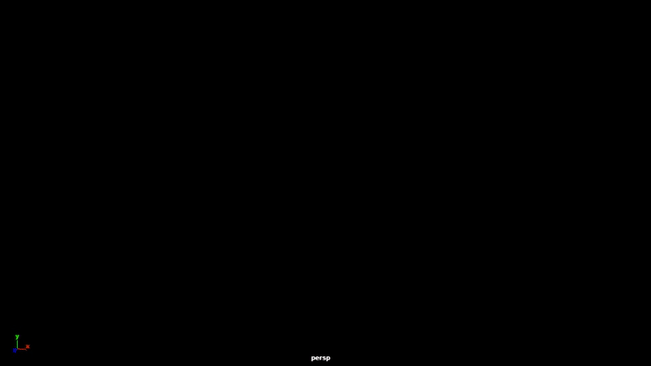

Maya & Nuke

During the development period of The Dragon Prince, I developed a tool for generating speedlines without the need for any simulation engine. Here's the result for what I'm about to show you in this page.
How does it work?
First, I'd like to tell you about this node in Nuke called STMap. In case you're not familiar with it here's an explanation from Foundry.
"The STMap node allows you to move pixels around in an image. STMap uses two channels to figure out where each pixel in the resulting image should come from in the input channels.
The U and V values are the absolute position of the source pixel. The values are normalized to be between 0 and 1, where 0 is the bottom left corner of the input image, and 1 is the top right corner. "
The goal here is to emit this gradient map from a moving object in Maya so that we use the STMap in Nuke to replace it with whatever image we want.
I'm going to work on this shot to simplify the process

Let's start
In Maya, select an edge that you want to emit the tail and convert it to a curve (Modify -> Convert -> Polygon Edges to Curves).
Then select the curve you just made and create snapshots from it (Visualize -> Create Animation Snapshot).
"Animation Snapshot creates copies of animated objects at intervals of a playback range. Animation Snapshot works on NURBS or polygonal geometry"

Now loft these edges with with the following setting (Number V controls the smoothness of the generated mesh).
it's crucial that you set Surface Degree to Cubic.
This will ensure that the faces are evenly spaced out along the vertical axis of the uv.
The following python code will construct gradient and transparency ramps for the lofted mesh.
The code will also set some expressions on these ramps so that they look as if they're following the object.
class Ramp():
ramp = ""
def __init__(self):
ramp = self._createRamp()
self.ramp = ramp
def _createRamp(self):
rampRed = cmds.shadingNode("ramp", asTexture=True )
return rampRed
def setColor(self, indx, color3):
cmds.setAttr(self.ramp + ".colorEntryList[{}].color".format(indx) , color3[0], color3[1], color3[2] ,type="double3")
def setExpression(self, exp):
cmds.expression(string=exp, object=self.ramp, alwaysEvaluate=True, unitConversion="all")
def setType(self, uv):
# uv = int
# 0: V Ramp, 1: U Ramp
cmds.setAttr(self.ramp + ".type", uv);
def setPosition(self, indx, pos):
cmds.setAttr(self.ramp + ".colorEntryList[{}].position".format(indx), pos);
def setInterpolation(self, interp):
# interp = int
# 0: None, 1: Linear
cmds.setAttr(self.ramp + ".interpolation", interp)
class Merge():
layeredTexture = ""
def __init__(self, node1, node2, blendMode):
layeredTexture = self._createLayeredTexture()
self.layeredTexture = layeredTexture
self._Merge(node1, node2)
self._setMergeMode(blendMode)
def _createLayeredTexture(self):
layeredTexture = cmds.shadingNode("layeredTexture", asTexture=True )
return layeredTexture
def _Merge(self, node1, node2):
cmds.connectAttr(node1 + ".outColor", self.layeredTexture + ".inputs[1].color", force=True);
cmds.connectAttr(node2 + ".outColor", self.layeredTexture + ".inputs[2].color", force=True);
def _setMergeMode(self, mode):
cmds.setAttr(self.layeredTexture + ".inputs[1].blendMode", mode)
class SurfaceShader():
surfaceShader = ""
shadingEngine = ""
def __init__(self):
surfaceShader = self._createSurfaceShader()
self.surfaceShader = surfaceShader
shadingEngine = self._createShadingEngine()
self.shadingEngine = shadingEngine
self._connectShadingEngine()
def _createSurfaceShader(self):
surfaceShader = cmds.shadingNode("surfaceShader", asShader=True)
return surfaceShader
def _createShadingEngine(self):
shadingEngine = cmds.shadingNode('shadingEngine', asUtility=True)
return shadingEngine
def _connectShadingEngine(self):
cmds.connectAttr(self.surfaceShader + ".outColor", self.shadingEngine + ".surfaceShader ", force=True);
cmds.connectAttr(self.shadingEngine + ".partition", ":renderPartition.sets", nextAvailable=True)
def connectColor(self, node):
cmds.connectAttr(node + ".outColor", self.surfaceShader + ".outColor", force=True);
def connectTransparancy(self, node):
cmds.connectAttr(node + ".outColor", self.surfaceShader + ".outTransparency", force=True);
def _getHeadExpression():
headExp = "$maxFrame = `playbackOptions -q -max`;\n{}.colorEntryList[1].position = (frame-1)/($maxFrame-1) + 0.0001;"
return headExp
def _getTailExpressions():
tailExp = "$offset = .1;\n{0}.colorEntryList[0].position = {0}.colorEntryList[1].position - $offset;"
return tailExp
def _constructRedRamp():
rampRed = Ramp()
rampRed.setType(0)
rampRed.setColor(0, (0,0,0))
rampRed.setColor(1, (1,0,0))
rampRedHeadExp = _getHeadExpression().format(rampRed.ramp)
rampRedTailExp = _getTailExpressions().format(rampRed.ramp)
rampRed.setExpression(rampRedHeadExp)
rampRed.setExpression(rampRedTailExp)
return rampRed.ramp
def _constructGreenRamp():
rampGreen = Ramp()
rampGreen.setType(1)
rampGreen.setPosition(0, 0)
rampGreen.setPosition(1, 1)
rampGreen.setColor(0, (0,1,0))
rampGreen.setColor(1, (0,0,0))
return rampGreen.ramp
def _constructTransparencyRamp():
rampTransparency = Ramp()
rampTransparency.setType(0)
rampTransparency.setInterpolation(0)
rampTransparency.setColor(0, (0,0,0))
rampTransparency.setColor(1, (1,1,1))
rampTransparency.setColor(2, (1,1,1))
rampTransparency.setPosition(2, 0)
rampTransparencyHeadExp = _getHeadExpression().format(rampTransparency.ramp)
rampTransparencyTailExp = _getTailExpressions().format(rampTransparency.ramp)
rampTransparency.setExpression(rampTransparencyHeadExp)
rampTransparency.setExpression(rampTransparencyTailExp)
return rampTransparency.ramp
redRamp = _constructRedRamp()
greenRamp = _constructGreenRamp()
transparancyRamp = _constructTransparencyRamp()
mergedRamps = Merge(redRamp, greenRamp, 4).layeredTexture
surfaceShader = SurfaceShader()
surfaceShader.connectColor(mergedRamps)
surfaceShader.connectTransparancy(transparancyRamp)

If you assign the shader you should get this.
Now we just use the STMap in Nuke to hook any image.


This tool was used in The Dragon Prince to generate speedlines in some shots.

Speedlines with Houdini
An alternative approach that's more procedural can be done in Houdini.
We can scatter some points based on velocity threshold and generate lines using SOP Solver.